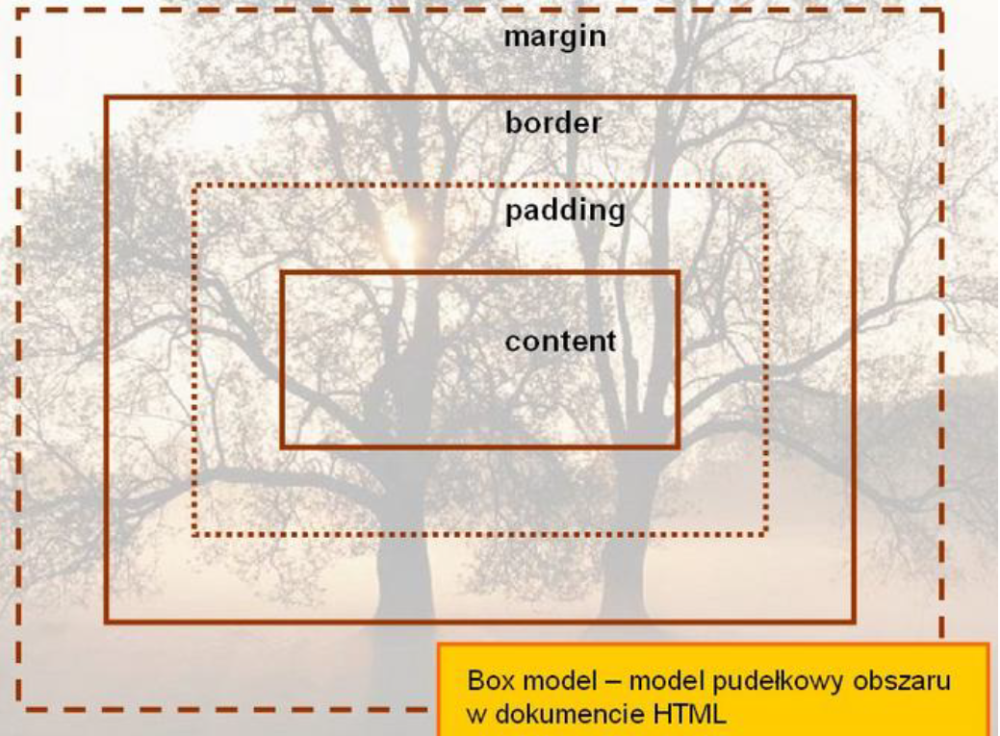
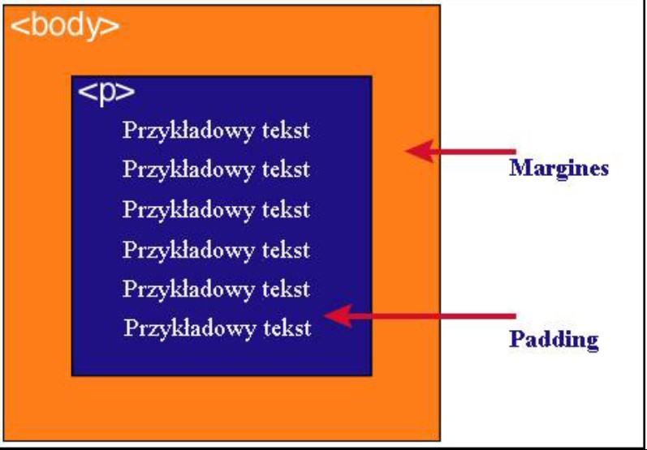

Każdy element w dokumencie HTML, otacza się prostokątnym obszarem zwanym pudełkiem
(ang. Box model). Pudełko składa się z kilku warstw:
| Content | zawartość elementu (np.: tekst, obrazek) |
| Padding | otaczające marginesy wewnętrzne, odstęp między obramowaniem i zawartością elementu |
| Border | obramowania wokół zawartości elementu, ma styl i kolor. |
| Margin | marginesy wokół ramki (margines zewnętrzny). Jest to pusty obszar wokół ramki, który nie ma koloru tła i jest przeźroczysty. |
|
 |
|
 |
Jak widać na rysunku, padding oznaczony jest kolorem niebieskim. Określa on wielkość przestrzeni wokół elementu < p>. Element ten posiada również margines zaznaczony kolorem pomarańczowym. Jest to odległość od brzegu elementu < body>.